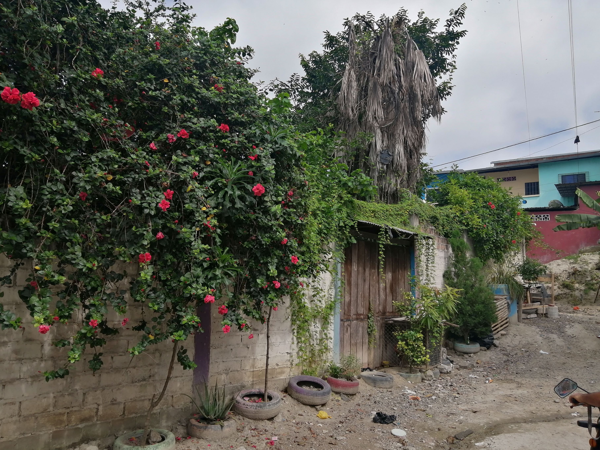
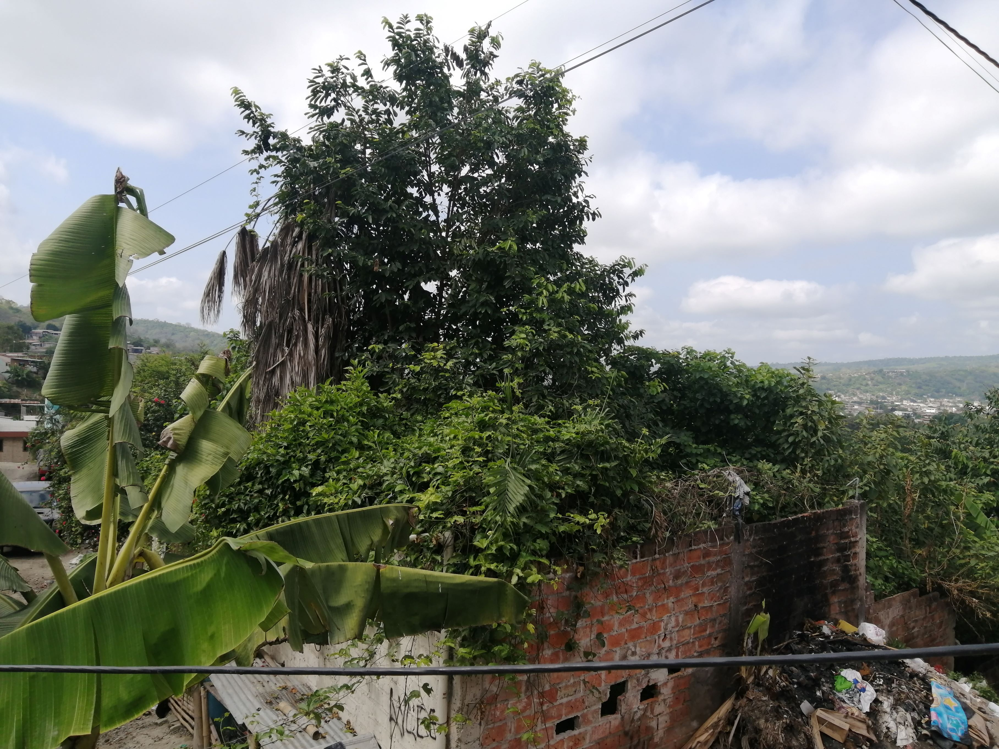
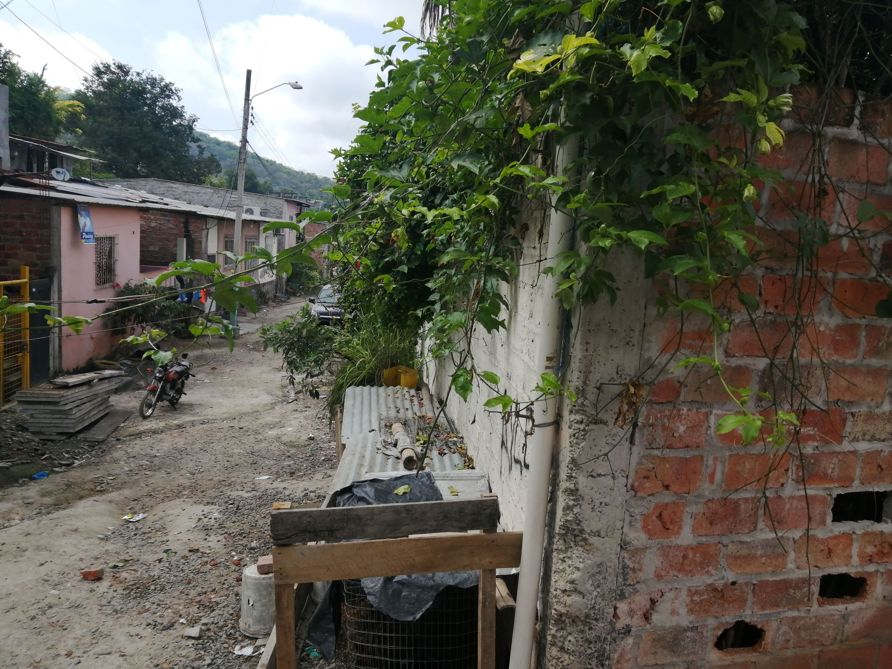
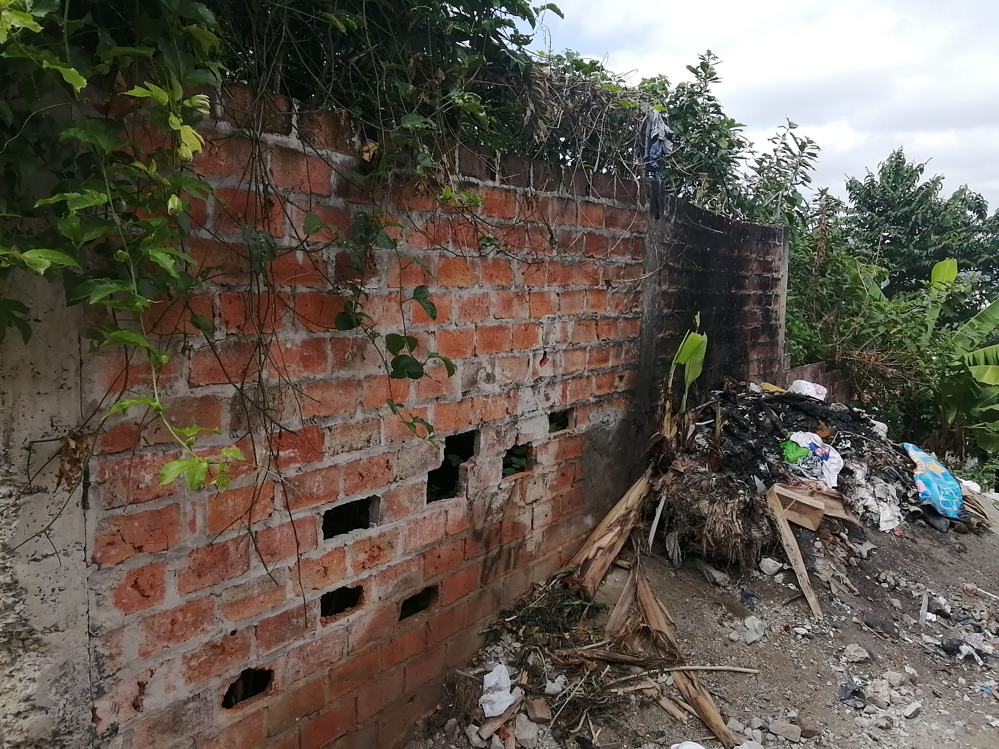
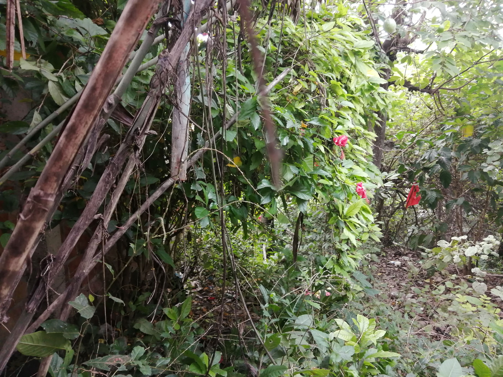
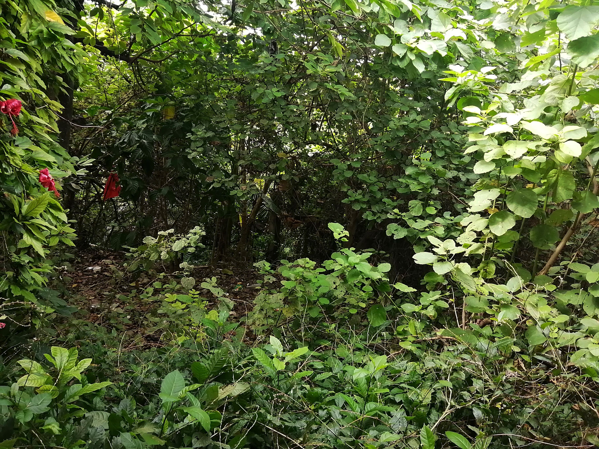
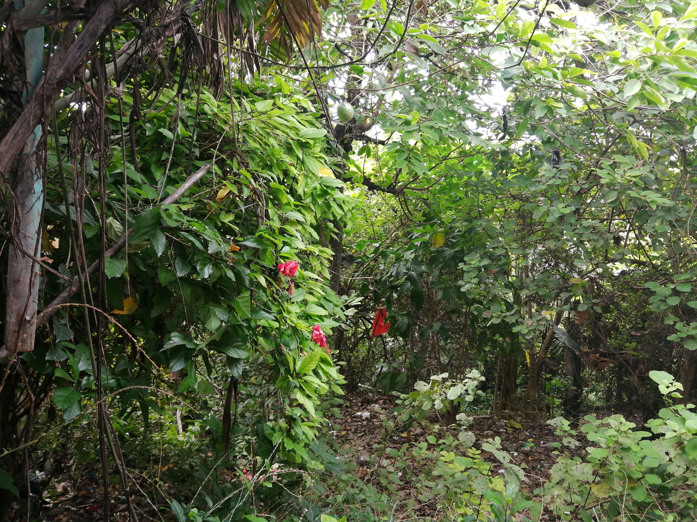
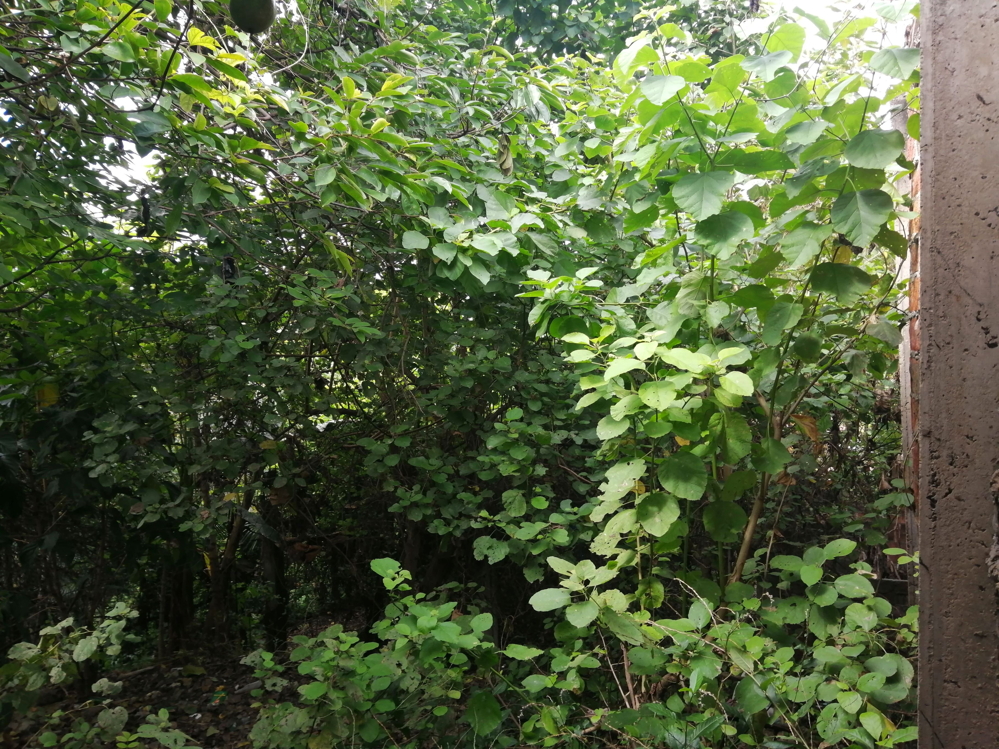

← volver al mapa
Terreno - EC-RJ-156592
EC-RJ-156592 · terreno · PORTOVIEJO, Manabi








Datos del remate
| Avalúo pericial | $3,993 |
| Tipo de bien | terreno |
| Área de construcción | 0.00 m² |
| Área de terreno | 172.37 m² |
| Cantón / Provincia | PORTOVIEJO, Manabi |
| Dirección / Sector | LAS PULGAS. la propiedad está ubicada al sur-este en el área urbana de la parroquia francisco pacheco del cantón portoviejo, en el sector las pulgas, para llegar al inmueble se toma como referencia el hospital verdi ceballos y con dirección hacia la vía vieja portoviejo santa ana se avanza 300m, luego se toma hacia la derecha y se avanza 255m, en este punto se ingresa por un callejón de la izquierda y se avanza 30m, en este punto, se sube por una cuesta por la derecha y se avanza 61m. luego se ingresa por la izquierda y en 85m se llega al predio que está situado al costado izquierdo |
| Señalamiento | Segundo Señalamiento |
| Fecha de remate | 2026-09-18 |
| No. de proceso | 13334201801973 |
Análisis vs. mercado
Descartado del análisis automático: comparables insuficientes (3/5).
Descripción completa del avalúo
se trata de un lote de terreno de forma rectangular con pendiente moderada
este terreno es de forma regular con una figura poligonal cuadrada en donde no existen construcciones tipo habitacional, esta propiedad solo cuenta con un cerramiento en un muy mal estado de conservación en dos de sus cuatro lados. en el interior de la propiedad cuenta con rastrojales. esta propiedad no cuenta con ningún tipo de mantenimiento y su topografía es con pendiente en descenso moderada, en una zona considerada de alto riesgo de deslave. este cerramiento se presume tenga con una edad superior a los 20 años se encuentra en un estado de deterioro y en tramos colapsados de forma parcial.
la propiedad está ubicada al sur-este en el área urbana de la parroquia francisco pacheco del cantón portoviejo, en el sector las pulgas, para llegar al inmueble se toma como referencia el hospital verdi ceballos y con dirección hacia la vía vieja portoviejo santa ana se avanza 300m, luego se toma hacia la derecha y se avanza 255m, en este punto se ingresa por un callejón de la izquierda y se avanza 30m, en este punto, se sube por una cuesta por la derecha y se avanza 61m. luego se ingresa por la izquierda y en 85m se llega al predio que está situado al costado izquierdo
Límites: norte: callejon publico sin nombre en 11.40m sur: hrds. de escobar santana en 11.40m este: con hrds del señor trifido escobar en 15.12m oeste: con medardo jaramillo en 15.12m
Clave catastral: 02040210090000000
Periodo de posturas: 18/09/2026 00:00:00 a 18/09/2026 23:59:59
Dependencia jurisdiccional: UNIDAD JUDICIAL CIVIL DE PORTOVIEJO
Esta ficha es una copia de lo publicado en el sitio oficial de remates
judiciales de la Función Judicial del Ecuador, para consulta — no
reemplaza el expediente judicial. remates.funcionjudicial.gob.ec no da
un link propio por remate, por eso se generó esta página aparte.
Antes de ofertar, el expediente debe revisarlo un abogado.